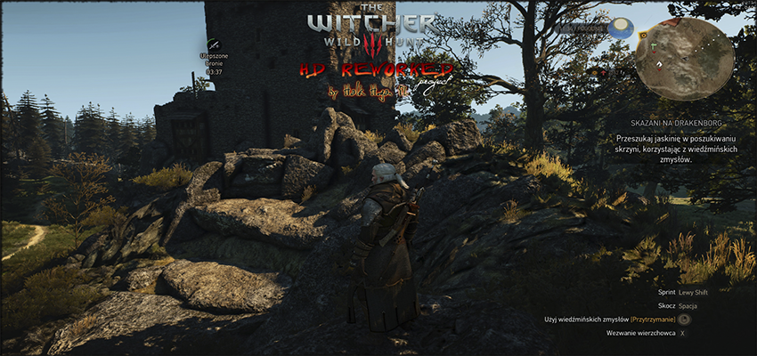
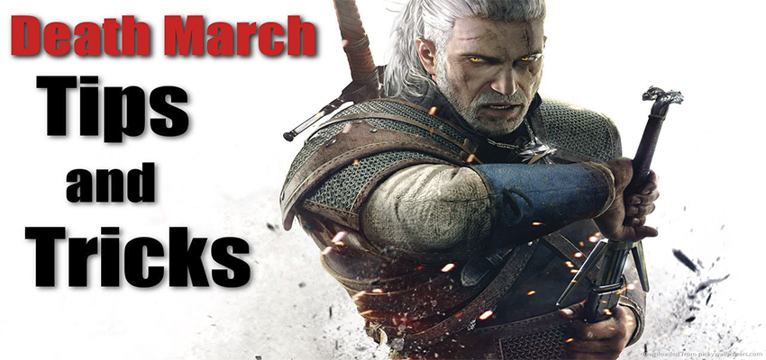
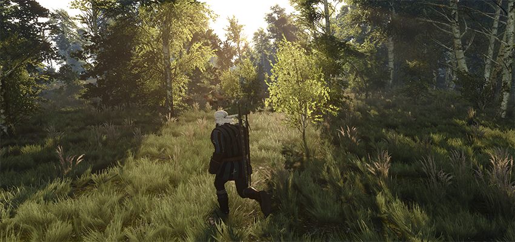

Jika Anda mencari yang lebih baik, lebih tajam, model dan tekstur lebih detail, memberi makan kucing anda di mod ini. Batu, pohon, peti, atap, dan lantai semua telah dirombak dengan peningkatan resolusi dan kecerahan, mungkin lebih untuk yang akan datang.
Proyek ini bertujuan untuk meningkatkan grafis dengan pengerjaan ulang model dan tekstur untuk kualitas yang lebih baik.

Ketika pertama kali bermain, mungkin pemain merasa sedikit bingung dengan lingkup besar dunia terbuka. Berikut adalah beberapa tips untuk membuat hasil maksimal dari beberapa jam pertama gameplay. JANGAN SKIP TUTORIAL. Sementara banyak pemain mungkin tergoda untuk melewati bagian ini, pertempuran di The Witcher agak sedikit berbeda dari sebelumnya. Pastikan untuk memperhatikan selama pelajaran Vesemir, dan terus berlatih dengan dia dalam mode bebas sampai anda merasa nyaman dengan mekanik pertempuran.

Hanya karena The Witcher 3: Wild Hunt adalah salah satu permainan terbaik (banyak, game terbaik) 2015, bukan berarti tidak ada ruang untuk perbaikan. Dari minggu pertama modders telah bekerja keras meningkatkan, merevisi, dan tweaking RPG fantasi ini. Kami yakin ada lebih banyak mods, jadi kami akan memperbarui post ini ketika mod-mod baru bermunculan. Berikut adalah mod terbaik sejauh ini untuk The Witcher 3.